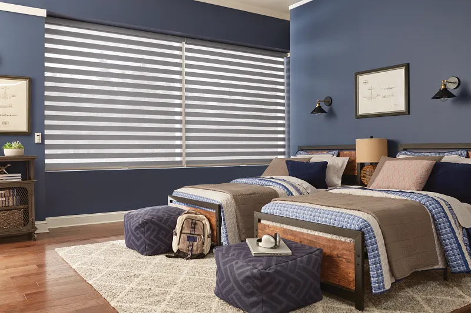

Quiet Cordless Shades for Oklahoma City & Edmond Homes
Oklahoma homeowners in Oklahoma City and Edmond choose the Graber UltraLite Lift System for its whisper-quiet operation, smooth cordless control, and enhanced family safety. This groundbreaking shade system requires only the lightest touch to lift and lower—no cords, no noise, just effortless elegance.
What You'll Learn in This Article:
- ✓ Why quiet operation matters: the Graber UltraLite's whisper-silent mechanism is perfect for families, bedrooms, and busy homes
- ✓ Safety benefits: cordless design eliminates dangerous cords while providing precise light control
- ✓ How minimal light gaps improve sleep quality and room darkness
- ✓ Smooth, effortless operation that works beautifully on extra-wide windows and difficult placements
Call Brent & Edna today at 405-259-5599
for your window treatment questions.
Free Graber UltraLite Cordless Lift System
On Select Graber Shades Graber
Pleated, Natural, Solar, Roller, and Roman Shades through 11/30/25
Superior Operation
Adjusting your shades has never been easier. Graber UltraLite Lift lets you lift and lower your shade with a featherlight touch. You'll feel the difference from the very first pull—nearly effortless and incredibly smooth. When you combine this technology with custom-made blinds from Shaded In The Sun, you get the perfect fit and operation that ready-made shades simply can't match.
Smaller Light Gap

The innovative Graber UltraLite Lift system is designed to minimize the amount of light that seeps in along the edge of the shade. That means you get better light control—which translates into a darker room and better sleep, even when the sun is shining. Explore our selection of custom window shades to find the perfect light control solution for your home.
An Elegant Look

A Graber UltraLite Lift shade is sleek and attractive. Our mounting hardware coordinates with your Graber shade to create a clean, finished look. Plus, all mechanical components are thoughtfully hidden so that nothing detracts from the beauty of your shade.
Precise Placement

You can expect flawless performance from your Graber UltraLite Lift shade. The groundbreaking design allows you to precisely place your shade the first time, every time—making quick adjustments a breeze.
Quieter Function
Whether opening or closing your shade, the Graber UltraLite Lift system hardly makes a sound. In fact, the whisper-quiet operation won’t wake a sleeping baby or disturb a napping partner. It’s our most discreet lift system yet.
Outperforming Competitors

Graber raises the bar on raising the shade. With our extensive selection of Graber UltraLite Lift shades in various sizes and styles, there's a good chance we have a solution to fit every window in your home. And with our selection of both Graber® and Norman® products, you have the best options available in Oklahoma City and Edmond.
Related Articles
Five Reasons to Choose Custom Shades
Learn why custom-made shades deliver superior quality, perfect fit, and endless design options compared to ready-made alternatives.
Explore the benefits of custom shadesEnergy-Saving Window Shades
Discover how premium shades reduce your cooling costs during Oklahoma's hot summers while enhancing your home's comfort.
Learn about energy-efficient shadesChild-Safe Window Coverings
Explore cordless and child-safe window treatment options that protect your family while maintaining beautiful style.
Browse safe shade options